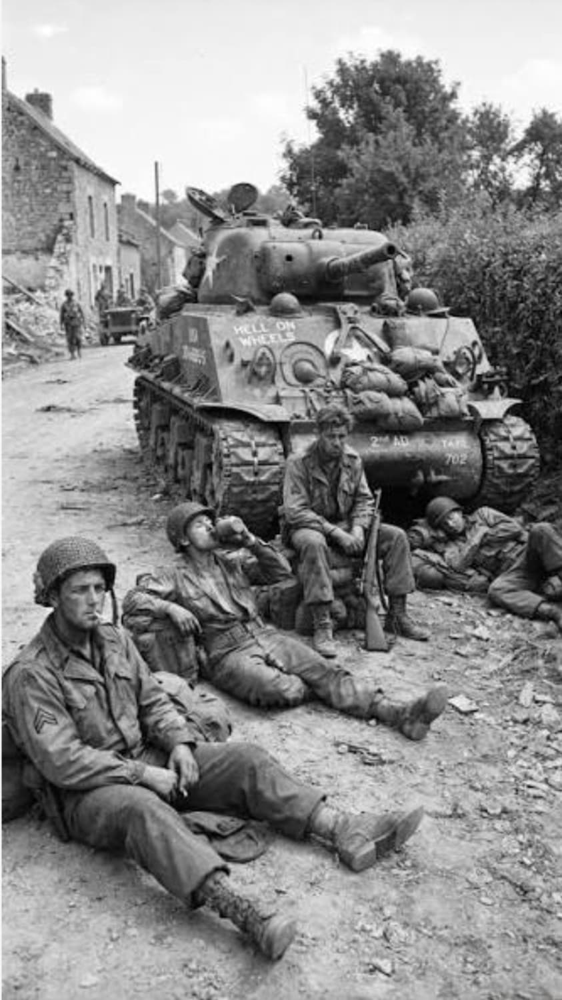
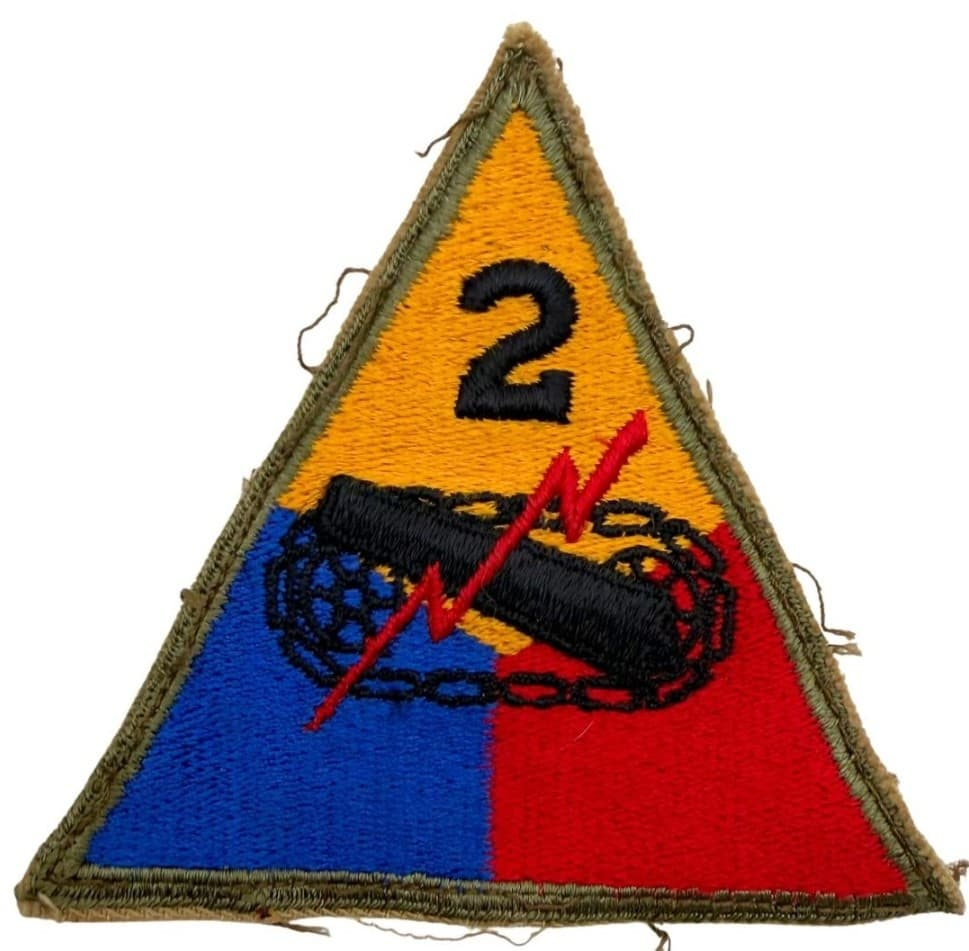
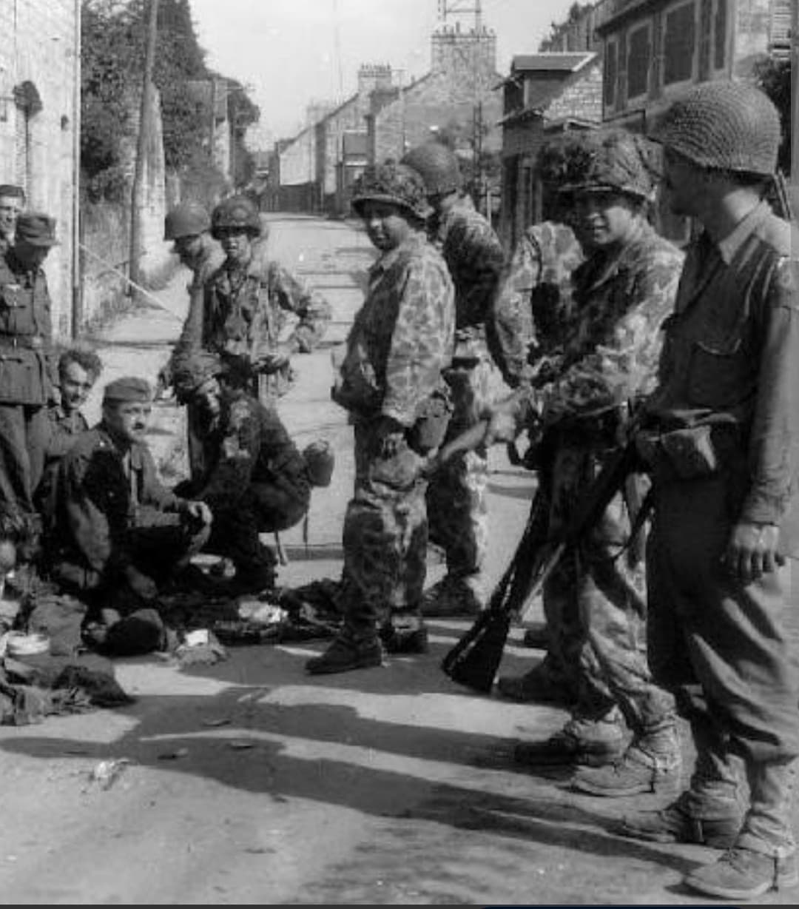

Le fer de lance du général Patton, la percée de l'Opération Cobra et la contre-attaque foudroyante dans les Ardennes

Surnommée « Hell on Wheels » (L'Enfer sur Roues), la **2nd Armored Division** est sans conteste l'une des unités blindées les plus célèbres, redoutées et agressives de l'histoire de l'US Army.
Organisée et entraînée à ses débuts par le général George S. Patton, la division a joué un rôle déterminant lors de la percée de Normandie (**Opération Cobra**), l'encerclement de la poche de Falaise, ainsi que dans la neutralisation de la 2. Panzer-Division durant la bataille des Ardennes.
Activée en juillet 1940 à Fort Benning sous le commandement du général **George S. Patton Jr.**, la division se voit attribuer son célèbre surnom par Patton lui-même lors de manœuvres militaires impressionnantes en 1941.
Son insigne triangulaire associe le **jaune** de la cavalerie, le **bleu** de l'infanterie et le **rouge** de l'artillerie. Au centre figurent le canon de char, la chenille noire et l'éclair rouge symbolisant la triade force, mobilité et rapidité, surmontés du chiffre **2**.

Après avoir mené le débarquement à Safi au Maroc (*Opération Torch*) en novembre 1942, la division participe à l'**Opération Husky** en Sicile en juillet 1943, conquérant Palerme dans une ruée blindée fulgurante.
Débarquée sur **Omaha Beach** le 9 juin 1944 (D+3), elle s'enfonce dans le bocage normand. Fin juillet 1944, lors de l'**Opération Cobra**, la 2nd Armored sert d'élément de rupture principal, exploitant la trouée de Saint-Lô pour foncer vers le sud, pousser vers Avranches et participer à la fermeture de la poche de Falaise.

Après avoir été la première division alliée à pénétrer en Belgique puis à franchir la frontière allemande à la ligne Siegfried, la division est précipitée en décembre 1944 dans la **bataille des Ardennes**. Près de Celles, la 2nd Armored encercle et anéantit presque entièrement la 2. Panzer-Division allemande, stoppant net la pointe d'assaut ennemie vers la Meuse.
En mars 1945, la division franchit le Rhin lors de l'**Opération Flashpoint** et réalise une avancée spectaculaire à travers la plaine nord-allemande, devenant la première division américaine à atteindre le fleuve Elbe à Schönebeck le 11 avril 1945.
Au cours de ses 281 jours de combat en Europe et en Méditerranée, la 2nd Armored Division enregistre plus de **7 300 pertes au combat** (dont environ 1 120 tués).
Deux de ses membres ont reçu la prestigieuse Medal of Honor. La division a détruit ou capturé des milliers de véhicules blindés ennemis et fait plus de 91 000 prisonniers de guerre allemands, s'imposant comme une légende de l'arme blindée.
Page du Musée HOP WW2 – Section Unités & Divisions Célèbres